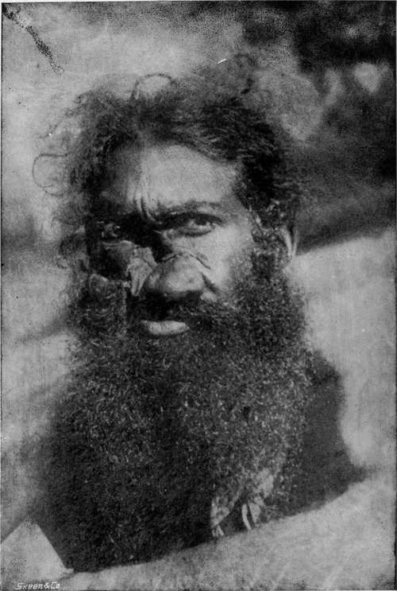

Chapter XIII. Wild Pigs
Description
This section is from the book "Sport In The Low-Country Of Ceylon", by Alfred Clark. Also available from Amazon: Sport in the Low-Country of Ceylon.
Chapter XIII. Wild Pigs
WILD pigs, which are called wal-ooru by Sinhalese and kâtu-pandi by Tamils, are not considered "game," and are not protected in any way by the Game Ordinance. Nevertheless, of all the larger wild animals they are much the most numerous. They are to be found both in the hills and in the low-country, and are very common in the neighbourhood of the few jungle villages in the eastern and western parts of the Island, which are inhabited by Moormen, who will not touch these unclean animals. There are favourite haunts in the low-country to which the expressive phrase that they " stink of pigs" might almost literally be applied. Numbers are shot, taken in dead-fall traps and killed by leopards every year, nevertheless, there is little danger of their ever becoming scarce.
Though found everywhere wild pigs avoid the high, dry tracts of forest in which for the greater part of the year water is scarce, also dense thorny scrub and the sandy forests along the coast. They love swamps and the neighbourhood of rivers and tanks where there is plenty of soft soil for them to grub up in search of roots and -larvae, also mud to wallow in.
Herds of all sizes are to be met with, from families of half-a-dozen to droves of fifty or more. These consist almost entirely of sows and young pigs of both sexes, as the boars, as soon as they arrive at full growth, wander off by themselves, only joining the herd occasionally. Natives say that solitary barren sows are not uncommon.
In size wild swine are smaller than the ordinary domestic pig, and are of course, much thinner and leggier. The boars are much larger than the sows, and formidable brutes standing 40 inches at the shoulder and weighing over 20 stone, with thick mane-like bristles on the neck and sharp curving white tusks may sometimes be seen. Ordinary boars are about 30 to 34 inches high and weigh about 15 stone in good condition. All wild pigs have a musky odour which is especially strong in the old boars.
Though so much hunted by both men and leopards, they shew less timidity and are more often seen out in the open than other wild animals. If their suspicions are roused and they are uncertain what danger threatens them, the sows, though almost defenceless creatures, will sometimes advance grunting as if about to attack the enemy. They are very clannish in disposition. Should a pig squeal from fear or pain the other members of the herd will run to it at once to ascertain the cause of the trouble.
All their senses are fairly good and they are as much on the alert as other wild animals, but, from their habit of lying in hollows or hidden in the sedge along tank margins and in other positions from which they have no view, they are, as a rule, easily approached. They walk only on the two large middle toes which are provided with strong hoofs ; the upper back toes do not touch the ground except in very swampy soil. When bolting they can gallop at a great pace, as many a man has found who has tried to cut off from the jungle one which he has surprised wallowing in a mud-hole in the open. Their power of turning up the soil with their hard snouts is very remarkable. One of the commonest of jungle-sights is the soft margin of a tank dug up by them as systematically and completely as if done with a hoe.
They are rather more noisy than most animals. A "sounder" of them while grubbing will keep up a continual low grunting which sometimes betrays their presence, and the little pigs often fight, running at each open-mouthed and squealing loudly. The shrill screams of a wounded pig are ear-piercing.
Wild pigs are omnivorous, Their food consists generally of fallen forest fruits, roots and grubs. They will, however, devour the remains of any animal they may find dead, and do not object to the flavour though the carcase be a week old. Generally they are lean and tough-fleshed, but, about the middle of the year when the forest trees, especially the sweet-fruited " palai," drop their fruit, they get very fat. From twenty to thirty measures of fat have been obtained by villagers from a single pig. They usually drink at the forest and river pools, but in time of drought resort to the dry rivers, in the sandy beds of which they dig for water making deep holes. They spend a great deal of their time wallowing in mud holes for the sake of coolness and to escape insect pests. Old boars are fond of rubbing themselves against trees. The bark may often be seen deeply scored by their tusks which they are popularly supposed to sharpen in that way, though it is more likely that it is done merely for amusement.
Face Of A Veddah Mauled By A Bear
The sows begin to breed before they are two years old, and often have two litters of four to six young each year. The period of gestation is only about four months. When about to give birth to a litter a sow will make a "nest" of grass which she will reap with her mouth and lay systematically in layers. Under this shelter she will lie hidden with her young until they are old enough to run about. These "nests" may of ten be found in open places, generally at the edge of the forest. The little pigs are more hairy than adults and have fulvous brown stripes along the back and sides. They are often run down and caught by natives. It is said that cross-breeds between wild and doniestic breeds are sometimes to be seen in the jungle villages. Though unclean feeders they do not appear to be subject to disease, and their sagacity and suspicious natures generally save them from accident. A whole herd has, however, been known to jump down into a village well in the extremity of thirst.
Though wild boars have a great reputation for ferocity and gameness. natives appear to have little fear of them as they never attack human beings unprovoked, though it is more than probable that any person approaching one wounded but on its legs, might get very badly ripped by its sharp tusks. Bull-dogs have been known to tackle boars single-mouthed and to come off scatheless, but as a rule dogs venturing to attack them have very soon to retire with their entrails hanging out. It has been said that no leopard will attack a full-grown boar, but it is doubtful whether this is so.
Wild pigs are the chief enemies of the native paddy cultivators and chena clearers. They are cunning fence-breakers, and during crop-time the fields and clearings have to be vigilantly guarded against their drepredations. It is on this account that they are not protected by law, but may be shot anywhere and at any time. Several persons in the Eastern Province have, of recent years, taken up as a business the shooting of wild pigs and salting the meat for sale at Galle and elsewhere.
Attempts have often been made to domesticate young wild pigs, but, if boars, they always grow up so savage as not to be safe to approach.
"Pig-sticking " has never been attempted in Ceylon ; no doubt on account of the density of the cover which makes riding after these animals impossible. The shooting of boars is consequently not considered unsportsmanlike here as it is in India.
Sows and young pigs are, of course, only shot for food and not as "game." The only trophy a boar yields is its skull and tusks. Any tusks measuring over eight inches along outside curve are above the average size, but pairs over twelve inches long are sometimes got. Two-thirds of each tusk are embedded in the jaw, only two or three inches protruding. The sows have small tusks and can use them when defending themselves against dogs.
Continue to:
Tags
forests, elephants, game, shooting, ceylon, bears, leopards, hunting